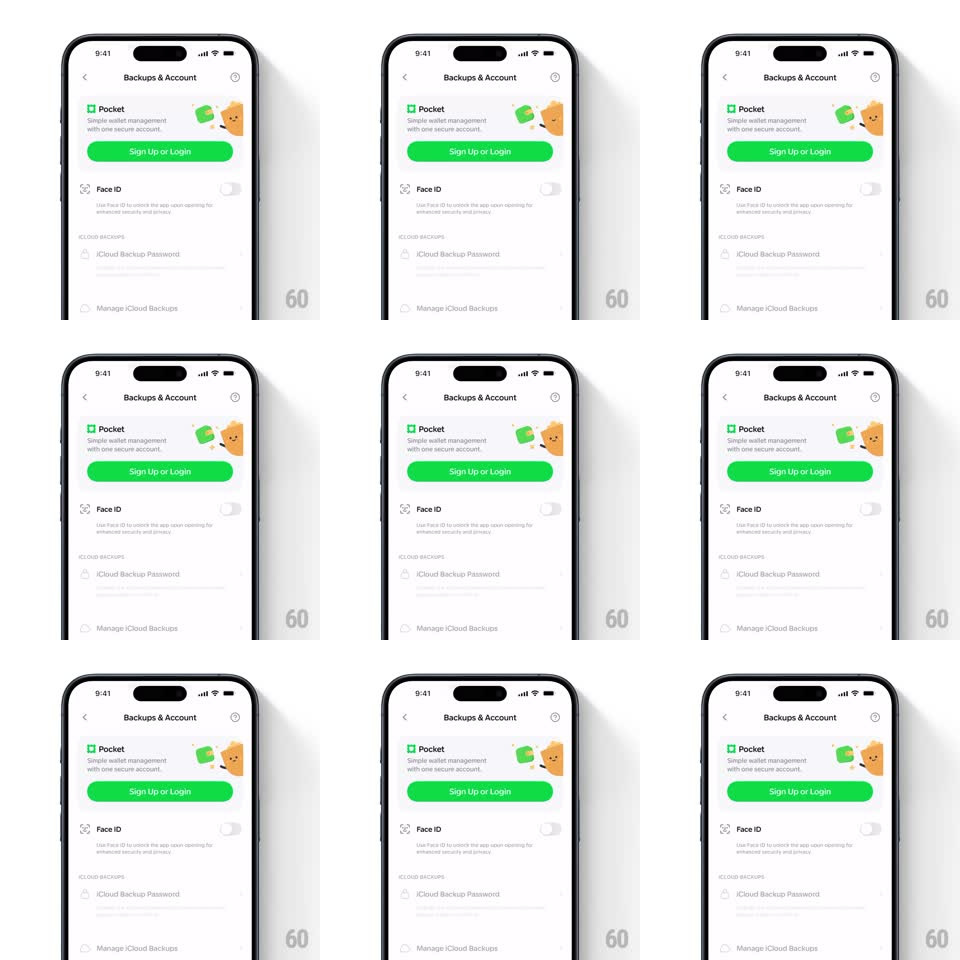

Media
Frame-by-frame

Rebuild this interaction 1:1: Family's Pocket promo card - on the "Backups & Account" settings page, the Pocket card ("Simple wallet management with one secure account", green Sign Up or Login button) hosts two small mascot characters (a green wallet character and an orange coin character) that idle with a subtle looping micro-animation while the rest of the page stays still.

Rebuild this interaction 1:1: Family's Pocket promo card - on the "Backups & Account" settings page, the Pocket card ("Simple wallet management with one secure account", green Sign Up or Login button) hosts two small mascot characters (a green wallet character and an orange coin character) that idle with a subtle looping micro-animation while the rest of the page stays still.
## Integration
Integration: stack-agnostic spec - springs given as stiffness/damping, timed motions as duration + curve; map every value to your framework and animation library of choice.
## Scene
White settings page: "Backups & Account" nav header, the Pocket promo card (title, subline, green CTA, two mascot characters on the right), Face ID toggle row, and iCloud backup options below.
## Motion spec
Pattern: ambient mascot micro-animation inside a promo card.
- The two mascots bob gently (translateY +/-3px, 2.4s loop, ease-in-out), phase-offset by ~400ms so they never move in lockstep.
- The orange coin character tilts slightly as it bobs (rotation +/-3deg, same loop); the green wallet character stays upright.
- Eyes blink: both characters' eyes close and reopen together every ~3.5s (100ms close, 100ms open).
- Everything else on the card and page - copy, CTA, toggles - is static.
## Calibration
- The motion stays inside the card's illustration zone - the card layout never shifts.
- Amplitudes are tiny (3px, 3deg) - felt as life, seen as stillness.
## Reduced motion
Static mascots; no bob, tilt, or blink.
## Don't miss
- The blink is synchronized between the two characters; the bob is not.
- The green CTA's saturation is the strongest color on the page - the mascots accent it, never compete.